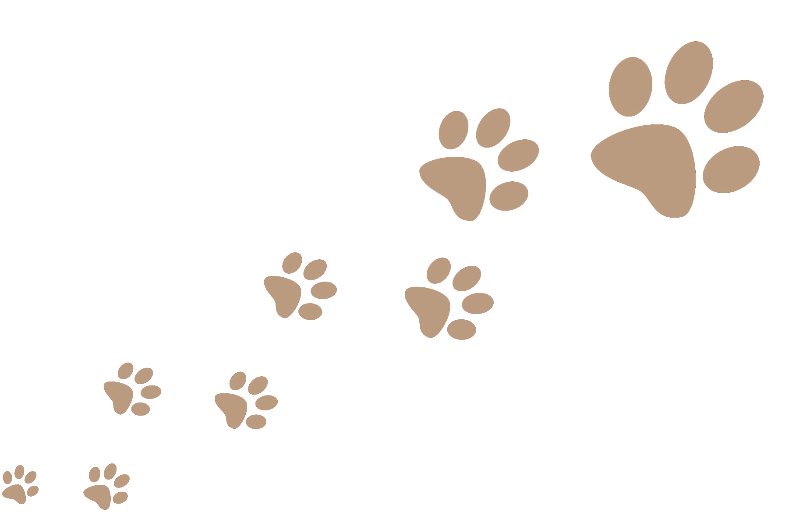
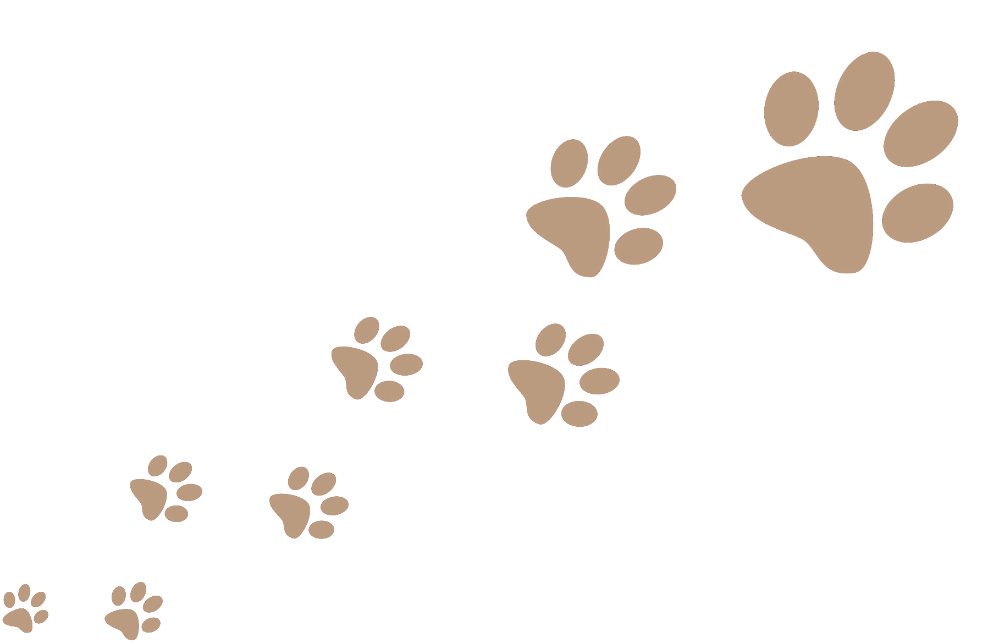
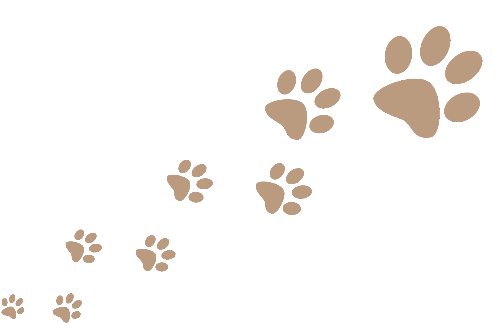
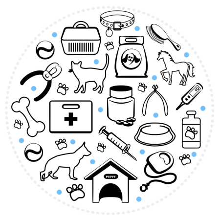
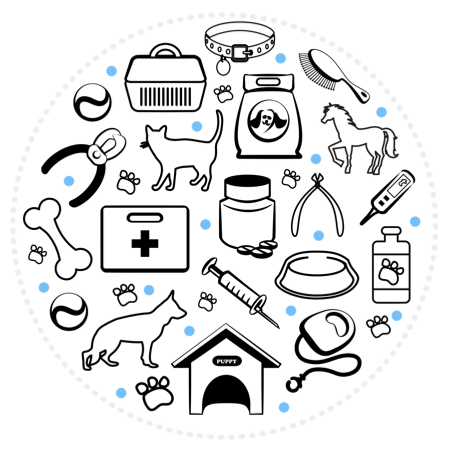

Hoşgeldiniz
Evcil dostlarınızın sağlığına özen gösteren, deneyimli veteriner hekimlerden oluşan bir klinik olarak hizmet vermekteyiz

 

Evcil dostlarınızın sağlığına özen gösteren, deneyimli veteriner hekimlerden oluşan bir klinik olarak hizmet vermekteyiz



Candan Veteriner Kliniği, evcil hayvanlarınızın sağlığına özen gösteren, kaliteli hizmet sunan bir veteriner kliniğidir. Deneyimli ve uzman veteriner hekimlerimiz, evcil hayvanlarınızın ihtiyaçlarını karşılamak için sizlere yardımcı olmaktadır.
Hizmetlerimiz arasında, rutin veteriner muayeneleri, aşılar, diş temizliği, cerrahi operasyonlar, laboratuvar testleri ve daha fazlası yer almaktadır. Evcil hayvanınızın sağlık durumu hakkında endişeleniyorsanız, size en iyi tedavi seçeneklerini sunmak için elimizden geleni yapacağız.

 

Kliniğimizde, evcil hayvanınızın konforu ve rahatlığı ön plandadır. Modern ve hijyenik klinik ortamımız, evcil hayvanınızın konforunu ve güvenliğini sağlar. Ayrıca, evcil hayvanınızın rahatlaması için, kliniğimizde özel alanlar da bulunmaktadır.
Candan Veteriner Kliniği'nin amacı, evcil dostlarınızın sağlıklı, mutlu ve uzun bir yaşam sürdürmelerini sağlamaktır. Bu nedenle, evcil hayvanınızın sağlık durumu hakkında endişeleniyor olsanız bile, veteriner hekimlerimiz sizinle birlikte çalışarak en uygun çözümü bulacaktır. Bizimle çalışarak, evcil hayvanınızın sağlığına en iyi şekilde bakabilir ve onların mutlu bir yaşam sürmelerine yardımcı olabilirsiniz.
Evcil dostlarınızın ihtiyaçlarını en iyi şekilde karşılamak için buradayız.